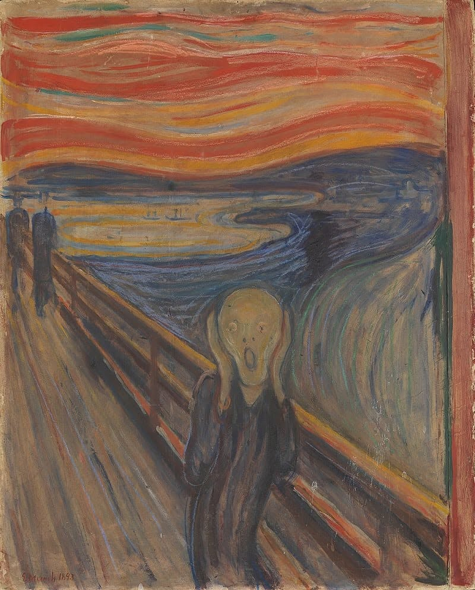

LE CRI
Ô douleur infinie, fidèle comme une ombre,
À mes pas, tu t’accroches, invisible et sombre,
Comme un boulet pesant aux pieds d’un bagnard,
Tes griffes m'enserrent dans ton piège barbare.
Je te hais, monde amer, injuste et cruel,
Tes entrailles pourries crachent un fiel mortel.
Je planterai ma rage au creux de tes entrailles,
Jusqu’à voir ton sang jaillir, bouillonnants de canailles.
Tes volcans béants vomiront la douleur,
Leur bouche avide, ouverte en un râle trompeur.
Tu baveras la mort, crapaud fou et glouton,
Tes lèvres trembleront sous le poids de tes démons.
Je m’en irai plus loin, hors des flammes, enfin,
De ton enfer cruel et des tourments malsains.
Je me posterai là, à l’aube, solitaire,
Pour écouter ta fin, lente, sanguinaire.
Tes râles résonneront comme un vent glacé,
Dans l’air de la nuit noire, écho du passé.
Un souffle libérateur des chaînes de l’enfer,
Je marcherai sur toi, et tu seras poussière.
Je goûterai ta chute, amère et infinie,
Et dans ton dernier cri, je trouverai la vie.
Je rirai, témoin de ta triste agonie,
Ô monde infâme, ta mort est mon harmonie.
Djamel Metref
At Yenni le 13 octobre 2024

← Tous les poèmes